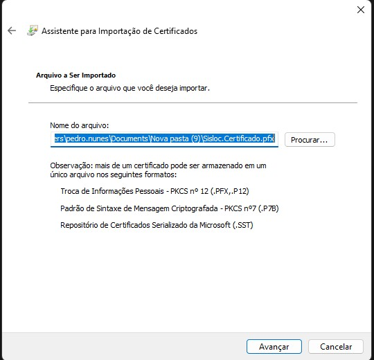
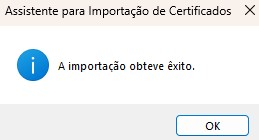
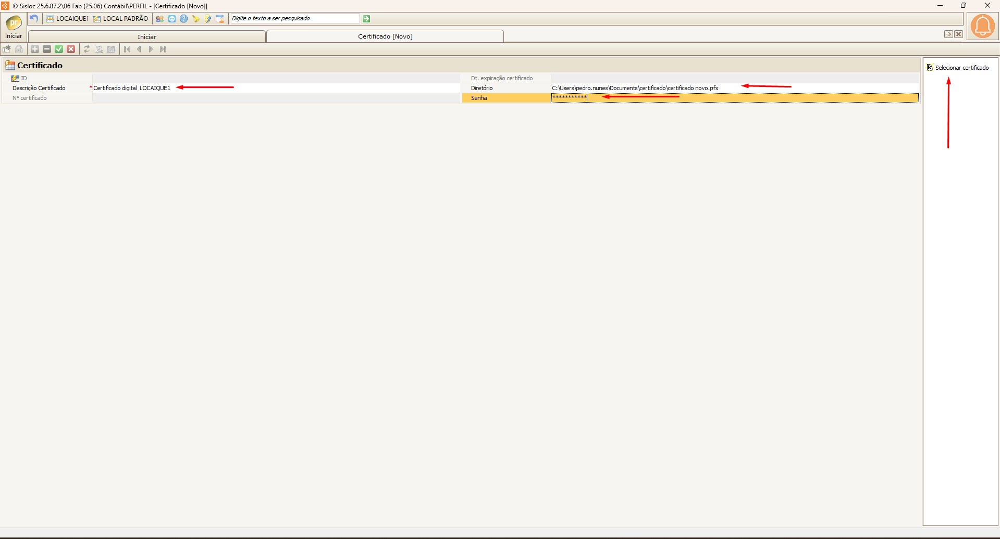

Procedimento: Atualização do Certificado Digital no servidor do Sisloc
Documento de referência para cadastro, atualização e validação de certificados.
🎯 Objetivo
Orientar o processo de cadastro ou renovação de um certificado digital no Sisloc, garantindo
que todas as séries de notas fiscais vinculadas sejam atualizadas automaticamente.
Passo 1º: Instalação do Certificado Digital A1 no Windows
Antes de cadastrar ou atualizar no Sisloc, é necessário instalar o certificado no sistema operacional Windows.
Procedimento:
Mensagem de confirmação: O sistema exibirá "A importação obteve êxito".
Isso significa que o certificado foi instalado com sucesso no Windows.




Passo 2º : Cadastro ou Atualização do Certificado
Acesse a função: No campo de pesquisa do Sisloc, digite:
CADASTRO\CERTIFICADO
Vídeo demonstrativo do processo de configuração/apontamento do certificado digital no Sisloc.
Para um NOVO certificado:
- Clique em Adicionar [+].
- Descrição: Dê um nome claro (ex:
Certificado NOME DA EMPRESA).
- Arquivo: Clique em "Selecionar Certificado" e selecione o arquivo
.pfx atualizado.
- Diretório: Clique no botão de reticências (...) para selecionar o caminho de rede onde
o certificado
.pfx foi salvo.
- Senha: Informe a senha do certificado.
- Clique em Salvar.
Observação: O certificado digital no formato .PFX deva obrigatoriamente possuir 9KB de
tamanho
CADASTRO\CERTIFICADO

Selecionar Certificado

Para ATUALIZAR um certificado existente:
- Dê um duplo clique no certificado a ser renovado.
- Arquivo: Clique em "Selecionar Certificado" e escolha o
NOVO arquivo
.pfx.
- Diretório: Clique no botão de reticências (...) para selecionar o caminho de rede onde
o novo certificado
.pfx foi salvo.
- Senha: Informe a NOVA senha.
- Clique em Salvar.
Ponto Chave: Ao salvar, o sistema atualiza automaticamente todas as séries fiscais que
utilizar este cadastro de certificado.
Passo 3º: Vincular o Certificado à Série Fiscal
Acesse a função: No campo de pesquisa do Sisloc, digite:
NOTA FISCAL\SÉRIE DE NOTA FISCAL
- Selecione a série que realiza a comunicação com a SEFAZ.
- No campo "Certificado Digital", selecione o certificado cadastrado no Passo 1.
- Clique em Salvar.
Voltar ao Passo 2º

Passo 4º : Teste e Validação
A etapa final é garantir que tudo está funcionando.
Para testar, acesse o caminho: "Nota Fiscal\NF Eletrônica de mercadoria\Consulta Status WebService". Em
seguida, selecione a série que deseja validar e clique no botão:
[✓] Comunicar Certificado
- ✅ SUCESSO: O sistema exibirá uma mensagem de confirmação. O certificado está pronto
para uso!
- ❌ ERRO: Se ocorrer falha, verifique se a senha está correta, se o
certificado não está vencido e se o diretório do certificado está
correto.
Teste e Validação

Sisloc.com